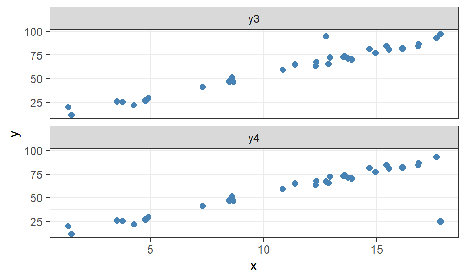
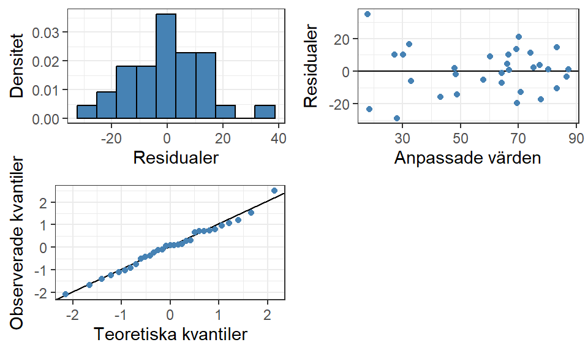
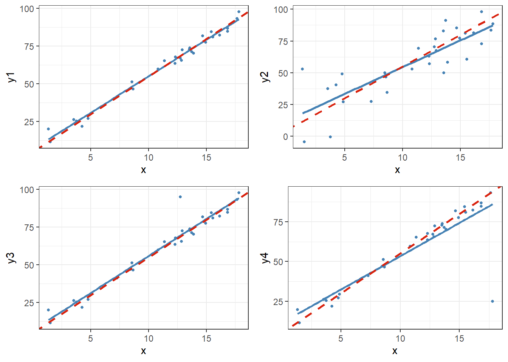

I Avsnitt 4.1 presenterades sätt att med hjälp av residualer bedöma om en modell uppfyller antaganden för linjär regression genom olika enkla visualiseringar. Residualer kan också användas för att identifiera observationer som vi anser påverka modellanpassningen mer än övriga samt att identifiera avvikande observationer som bör undersökas vidare.
I detta kapitel kommer vi behandla simulerade datamaterial. Vi simulerar först ett datamaterial med olika former av brus.
Visa kod
set.seed(20231005)## Skapar grunddatadata <-tibble(x =runif(n =31, min =0, max =20) %>%round(3),## Skapar y från x utan brus (brus läggs till senare)y = (5+5*x) %>%round(3),## Litet brus (sd = 3)y1 = y +rnorm(n =31, sd =3),## Stort brus (sd = 15)y2 = y +rnorm(n =31, sd =15) )## Visualisering av sambandendata %>%## "Roterar" datamaterialet för att förenkla visualiseringarpivot_longer(cols =-x,names_to ="Data",values_to ="y" ) %>%## Filtrerar bort y utan brus dplyr::filter( Data !="y" ) %>%ggplot() +aes(x = x, y = y) +geom_point(color ="steelblue", size =2) +theme_bw() +facet_grid(rows =vars(Data))
Figur 9.1: Spridningsdiagram för de olika datamaterialen.
Spridningsdiagrammet visar att båda sambanden ser ut att följa samma linjära positiva trend men punkterna i y1 ett starkare samband mellan x och y (mindre brus). Det finns inga tydliga indikationer på extremvärden då alla punkter i båda grupperna ser ut att följa sambandet väl.
Nästa steg i simuleringen är att lägga till extremvärden på två olika positioner, en närmare mittpunkten och en i utkanten av x:s värdemängd. Extremvärdet skapas med ett annorlunda värde på y än de övriga punkterna med liknande värden på x.
Visa kod
## Ändrar värden på y för att skapa extremvärdendata <- data %>%mutate(# Skapar de nya variablerna där extremvärden läggs tilly3 = y1,y4 = y1,# Ändrar värden på en specifik observation vid x nära till dess medelvärde/mediany3 =if_else(x ==median(x), 95, y3),# Ändrar värden på en specifik observation vid x långt från dess medelvärde/mediany4 =if_else(x ==max(x), 25, y4) )## Visualisering av sambandendata %>%## "Roterar" datamaterialet för att förenkla visualiseringarpivot_longer(cols =-x,names_to ="Data",values_to ="y" ) %>%## Filtrerar bort y utan brus dplyr::filter( Data %in%c("y3", "y4") ) %>%ggplot() +aes(x = x, y = y) +geom_point(color ="steelblue", size =2) +theme_bw() +facet_wrap(~ Data, nrow =2)

Spridningsdiagram för de olika datamaterialen.
Sammanfattningsvis har vi fyra olika responsvariabler:
y1 med litet brus,
y2 med mycket brus,
y3 med litet brus och ett extremvärde i mitten av x,
y4 med litet brus och ett extremvärde i ytterkanten av x.
Enkla residualer visar det absoluta avståndet mellan varje observation och dess punkt på den anpassade regressionslinjen, \(\hat{E}_i = Y_i - \hat{Y}_i\). Stora värden på residualerna kan indikera på att observationen ligger långt ifrån de övriga och med visualiseringar kan vi se om det endast är några enstaka observationer som har stora residualer eller om alla residualer generellt har stora värden. Det är främst i det första fallet som vi bör undersöka specifika observationer vidare då om alla residualer har stora värden är det främst en indikation på en sämre modell.
Avvikande observationer kan direkt påverka modellanpassningen till den grad att sambandet som anpassas inte speglar det övergripande samband som modellen ämnar att beskriva. Men bara för att en residual har ett stort absolutvärde betyder det inte alltid att residualen är en indikation på en avvikande observation. Ett lättare sätt att bedöma detta är att beräkna standardiserade residualer som också tar hänsyn till residualernas totala spridning istället för det absoluta avståndet från linjen.
9.1 Avvikande observationer
Låt oss anpassa fyra olika modeller, en för vardera simulerade responsvariabel y1-y4.
## Anpassar modellen som ska undersökasmodel1 <-lm(y1 ~ x, data = data)model2 <-lm(y2 ~ x, data = data)model3 <-lm(y3 ~ x, data = data)model4 <-lm(y4 ~ x, data = data)
Visa kod
diagnosticPlots(model1)
Residualdiagram för modell 1
Vi har ett värde vid \(\hat{y} \approx 20\) och \(\hat{E} \approx 6\) som har ett något större residualvärde än de övriga, men det är inte ett jättetydligt extremvärde.
Visa kod
diagnosticPlots(model2)

Residualdiagram för modell 2
I denna modell verkar vi återigen ha en observation vars residual avviker något från de övriga. Vi har också en ökad osäkerhet både i residualerna (större absolutbelopp) vilket uppkommer då datamaterialet generellt visar på ett större brus.
Visa kod
diagnosticPlots(model3)
Residualdiagram för modell 3
Modell 3 har en extremt tydlig avvikande observation som påverkar modellanpassningen negativt om vi jämför med modell 1.
Visa kod
diagnosticPlots(model4)
Residualdiagram för modell 4
När den avvikande observationer finns i utkanten av x:s värdemängd ser vi ännu tydligare en residual i diagrammen.
Om vi sammanställer en tabell för alla de fyra anpassade modellerna kan vi tydligare se effekten av hur olika sorters brus och extremvärden påverkar modellanpassningen.
Visa kod
modelJämför <-tibble(`Sann modell`=c("5", "5", "-"),`Lite brus`=c(model1$coefficients, summary(model1)$r.squared),`Stort brus`=c(model2$coefficients, summary(model2)$r.squared),`Avvikande nära mitt`=c(model3$coefficients, summary(model3)$r.squared),`Avvikande i ytterkant`=c(model4$coefficients, summary(model4)$r.squared) ) %>%as.data.frame()rownames(modelJämför) <-c("$\\hat{\\beta}_0$", "$\\hat{\\beta}_1$", "$R^2$")modelJämför %>%kable(caption ="Skattade koefficienter för alla modeller.", digits =3, escape =FALSE)
Tabell 9.1: Skattade koefficienter för alla modeller.
Skattade koefficienter för alla modeller.
Sann modell
Lite brus
Stort brus
Avvikande nära mitt
Avvikande i ytterkant
\(\hat{\beta}_0\)
5
6.460
12.257
6.655
11.425
\(\hat{\beta}_1\)
5
4.852
4.216
4.916
4.192
\(R^2\)
-
0.986
0.694
0.951
0.750
Visa kod
p1 <- data %>%ggplot() +aes(x = x, y = y1) +geom_point(size =1, color ="steelblue") +geom_smooth(formula = y~x, method ="lm", se =FALSE, color ="steelblue", linewidth =1) +geom_abline(intercept =5, slope =5, color ="#d9230f", linewidth =1, linetype =2) +theme_bw()p2 <- data %>%ggplot() +aes(x = x, y = y2) +geom_point(size =1, color ="steelblue") +geom_smooth(formula = y~x, method ="lm", se =FALSE, color ="steelblue", linewidth =1) +geom_abline(intercept =5, slope =5, color ="#d9230f", linewidth =1, linetype =2) +theme_bw()p3 <- data %>%ggplot() +aes(x = x, y = y3) +geom_point(size =1, color ="steelblue") +geom_smooth(formula = y~x, method ="lm", se =FALSE, color ="steelblue", linewidth =1) +geom_abline(intercept =5, slope =5, color ="#d9230f", linewidth =1, linetype =2) +theme_bw()p4 <- data %>%ggplot() +aes(x = x, y = y4) +geom_point(size =1, color ="steelblue") +geom_smooth(formula = y~x, method ="lm", se =FALSE, color ="steelblue", linewidth =1) +geom_abline(intercept =5, slope =5, color ="#d9230f", linewidth =1, linetype =2) +theme_bw()cowplot::plot_grid(p1, p2, p3, p4, nrow =2)

De fyra anpassade modellerna och den sanna regressionslinjen
Vi ser att modell 1 med litet brus (y1) faller ganska nära det sanna modellen, \(y = 5 + 5 \cdot x\), och detsamma gäller modellen med den avvikande observationen nära mittpunkten av den förklarande variabeln (y3). Däremot verkar modellerna där det finns ett stort brus överlag (y2) och en avvikande observation i ytterkanten av den förklarande variabeln (y4) hamna längre ifrån den sanna modellen och ha en större grad av osäkerhet eftersom förklaringsgraden är närmare 70 procent jämfört med 95-99 procent.
Vad detta resultat visar oss är att en avvikande observation behöver inte alltid generera en påverkan på modellanpassningen i stort men modellen kommer inte lyckas anpassa just den observationen bra. Vi behöver titta närmare på residualerna för att korrekt identifiera ifall en avvikande observation faktiskt påverkar modellen.
9.1.1 Standardiserade residualer
Standardiserade residualer sätter residualernas absoluta värden i relation till den generella residualspridningen. En residual med stort absolutvärde i en modell med stor generell residualspridning är mindre avvikande än en residual med stort absolutvärde i en modell med liten generell residualspridning.
## Funktion för att beräkna standardiserade residualerstandardResid <-function(model) {## Residualerna dividerat med residualspridningen z <- model$residuals /summary(model)$sigmareturn(z)}# Beräknar standardiserade residualerresidualData <-tibble(`Lite brus`=standardResid(model1),`Stort brus`=standardResid(model2),`Avvikande nära mitt`=standardResid(model3),`Avvikande i ytterkant`=standardResid(model4) ) %>%mutate(index =1:n() ) %>%as.data.frame()residualData %>%## "Roterar" datamaterialet för att förenkla visualiseringarpivot_longer(cols =-index,names_to ="Data",values_to ="resid" ) %>%mutate(## Konverterar grupperingsvariabeln till en factor med en angiven ordning på nivåernaData =factor(Data, levels =c("Lite brus", "Stort brus", "Avvikande nära mitt", "Avvikande i ytterkant")) ) %>%ggplot() +aes(x = index, y = resid) +geom_point(size =2, color ="steelblue") +theme_bw() +facet_wrap(~Data, nrow =2, ncol =2) +labs(y ="Standard. residualer")
Standardiserade residualer för de olika modellerna.
I figuren visas de standardiserade residualerna för respektive modell och här syns det tydligt vilka residualer som faktiskt är en avvikande observation och vilka som ändå ligger inom residualernas generella spridning. Det är främst i modellerna med extremvärden som de standardiserade residualerna uppvisar tydliga indikationer att dessa observationer är avvikande.
9.1.2 Avvikande observationer i X
I Tabell 9.1 såg vi att avvikande observationer i utkanten av X:s värdemängd verkar ha en större påverkan på modellanpassningen än avvikande observationer närmare mittpunkten av värdemängden. I en multipel linjär regressionsmodell kan denna jämförelse bli svår att genomföra med visualiseringar eller jämförelser mellan flera skattade lutningsparametrar. Istället kan leverage beräknas som visar hur långt bort den enskilda observationen (residualen) är från genomsnittet av alla förklarande variabler.
Leverage beräknas utifrån hattmatrisen, \(\mathbf{H} = \mathbf{X}(\mathbf{X}'\mathbf{X})^{-1}\mathbf{X}'\), specifikt diagonalelementen av matrisen. \(h_i\) är det i:te diagonalelementet från matrisen vars värden kan falla mellan 0 och 1, där 1 indikerar på stort avstånd från genomsnittet. Vi kan beräkna hattmatrisen i R med hjälp av matrisalgebra eller med hjälp av funktionen lm.influence() där objektet hat innehåller diagonalen av hattmatrisen.
Visa kod
## Skapar designmatrisenX <-model.matrix(y ~ x, data = data)## Beräknar hattmatrisenH <- X %*%solve(t(X) %*% X) %*%t(X)## Plockar ut leverageleverage <-diag(H)## Funktion för att plocka ut leverageleverage <-lm.influence(model1)$hat
I alla de fyra modellerna använder vi samma värden på den förklarande variabeln, så vi behöver endast skapa en visualisering som gäller för alla modeller.
Visa kod
## Skapar data för visualiseringvisData <-tibble(leverage = leverage ) %>%mutate(index =1:n() )## Visualiserar leverageggplot(visData) +aes(x = index, y = leverage) +geom_point(size =2, color ="steelblue") +theme_bw() +## Anger en skala som går mellan 0 och 1 (möjliga värden av h)scale_y_continuous(limits =c(0, 1) ) +## Skapar gränsvärdet för observationer som har för "höga" leverage och bör undersökas vidaregeom_hline(yintercept =2*ncol(X) /nrow(X),color ="#d9230f",linewidth =1,linetype =2 ) +labs(x ="Obs. index", y ="Leverage")
Leverage-värden för respektive observation
Den rödstreckade linjen beskriver en tumregel som ger oss lite hjälp på traven att bedöma ifall en residual har ett “högt” leverage värde eller inte. Tumregeln beräknas som: \[
\begin{aligned}
\frac{2\cdot (k+1)}{n} = \frac{2 \cdot p}{n}
\end{aligned}
\] Det finns två observationer, \(i = 11\) och \(i = 24\), som har leverage-värden som anses vara högre än tumregeln. Dessa två observationer är de som har minst värden på x, alltså de som ligger längst till vänster i Figur 9.1. Eftersom dessa punkter verkar följa det linjära samband som resten av punktsvärmen visar, finns det ingenting som tyder på att de är några observationer vi behöver oroa oss för.
9.1.3 Jackknife-residualer
Ett ytterligare sätt att använda leverage för att identifiera avvikande observationer är att beräkna Jackknife-residualer. Denna typ av residual beräknas genom att anpassa en modell utan observation \(i\) som sedan används för att skatta prediktera värdet på responsvariabeln och beräkna residualen. Eftersom en avvikande observation kan påverka modellanpassningen riskerar en vanlig eller standardiserad residual att underskatta avvikelsen då modellen dras mot den avvikande observationen. När en modell anpassas som inte inkluderar den specifika observationen kommer residualen ge en mer verklig bild av observationens faktiska avvikelse från det generella sambandet.
Istället för att behöva anpassa n olika modeller där varje respektive observation plockas bort kan vi använda leverage och modellens SSE enligt:
\[
\begin{aligned}
r_{(-i)} = \frac{e_i \cdot \sqrt{n - (k + 2)}}{SSE \cdot (1 - h_i) - e_i^2}
\end{aligned}
\] Vi kan skapa denna funktion i R genom följande kod:
Visa kod
## Skapar en funktion som beräknar jackknife-residualer från en angiven modelljackknife <-function(model) {# Sparar modellens residualer och leverage residuals <- model$residuals leverage <-lm.influence(model)$hat# Antal observationer n <-nrow(model$model)# Antal förklarande variabler (-1 för att ta hänsyn till y) k <-ncol(model$model) -1# Sparar modellens kvadratsumma för felet SSE <-sum(residuals^2)# Beräknar jackknife residualen jackknife <- residuals *sqrt((n - k -2) / (SSE * (1- leverage) - residuals^2))return(jackknife)}
Visa kod
residualData <-tibble(`Lite brus`=jackknife(model1),`Stort brus`=jackknife(model2),`Avvikande nära mitt`=jackknife(model3),`Avvikande i ytterkant`=jackknife(model4) ) %>%mutate(index =1:n() ) %>%as.data.frame()residualData %>%## "Roterar" datamaterialet för att förenkla visualiseringarpivot_longer(cols =-index,names_to ="Data",values_to ="resid" ) %>%mutate(Data =factor(Data, levels =c("Lite brus", "Stort brus", "Avvikande nära mitt", "Avvikande i ytterkant")) ) %>%ggplot() +aes(x = index, y = resid) +geom_point(size =2, color ="steelblue") +theme_bw() +facet_wrap(~Data, nrow =2, ncol =2) +labs(y ="Jackknife-residualer")
Figur 9.2: Jackknife residualer för de olika modellerna.
Med hjälp av Jackknife-residualerna ser vi att de observationer med höga leverage-värden inte påverkar modellanpassningen då värdena är i linje med alla andra observationers värden. Däremot syns ett värde var i de två nedersta diagrammen som tydligt indikerar på de extremvärden som vi placerat in avviker från det generella sambandet, vilket vi också förväntar oss.
9.2 Inflytelserika observationer
Till viss del beskriver Jackknife-residualer huruvida en observation har ett inflytande på modellanpassningen genom att beräkna en mer rättvis avvikelse för varje observation från det generella sambandet. Däremot såg vi i Figur 9.2 att extremvärdet nära mittpunkten av X också fått ett relativt högt värde trots att vi i Tabell 9.1 inte såg att den observationen hade en påverkan på modellanpassningen. Dessa residualer är alltså inte alltid så bra att identifiera observationens effekt på modellanpassningen, mer än att de identifierar avvikande observationer. Istället kan vi använda andra mått såsom DFFITS och Cook’s Distance för att avgöra om en observation påverkar modellanpassningen och anses vara en inflytelserik observation.
9.2.1 DFFITS
Vi kan mäta en observations inflytande på två olika sätt, antingen på sitt egna anpassade värde eller på alla anpassade värden. DFFITS undersöker om en observation har ett inflytande på sitt egna anpassat värde och använder sig utav Jackknife-residualerna som vi beräknade tidigare.
Gränsvärden för när vi anser ha identifierat en inflytelserik observation med DFFITS beräknas utifrån storleken på datamaterialet, där små till medelstora material har gränsvärdet 1 (heldragen linje i figuren nedan) eller \(2\cdot \sqrt{\frac{p}{n}}\) för stora datamaterial (streckad linje).
Visa kod
residualData <-tibble(`Lite brus`=dffits(model1),`Stort brus`=dffits(model2),`Avvikande nära mitt`=dffits(model3),`Avvikande i ytterkant`=dffits(model4) ) %>%mutate(index =1:n() ) %>%as.data.frame()residualData %>%## "Roterar" datamaterialet för att förenkla visualiseringarpivot_longer(cols =-index,names_to ="Data",values_to ="resid" ) %>%mutate(Data =factor(Data, levels =c("Lite brus", "Stort brus", "Avvikande nära mitt", "Avvikande i ytterkant")) ) %>%ggplot() +aes(x = index, y =abs(resid)) +geom_point(size =2, color ="steelblue") +theme_bw() +facet_wrap(~Data, nrow =2, ncol =2, scale ="free_y") +labs(y ="DFFITS") +geom_hline(yintercept =1,linewidth =1,linetype =1,color ="#d9230f" ) +geom_hline(yintercept =2*sqrt(ncol(X) /nrow(X)),linewidth =1,linetype =2,color ="#d9230f" )
Absolutbelopp för DFFITS från de olika modellerna.
Vårt simulerade data kan anses vara litet (\(n = 31\)) och vi kan därför använda värdet 1 som gräns. Vi ser att observation 11 anses inflytelserik i modellerna utan extremvärden men att den inte anses det när vi lagt till en tydligt avvikande observation som istället tagit över allt inflytande.
9.2.2 Cook’s Distance
Det är nästan självklart att en avvikande observation kommer påverka sitt egna anpassade värde. Det som vi oftast är intresserad av att undersöka är ifall en avvikande observation ger oss en felaktig modellanpassning för det generella sambandet, alltså om andra observationers anpassning påverkas. Måttet Cook’s Distance visar hur mycket inflytande en observation har på alla anpassade värden.
Beroende på vilka sorters residualer vi har tillhanda kan vi beräkna Cook’s Distance på två olika sätt. Studentiserade residualer kan delas upp i interna studentiserade och externa studentiserade. Den internt studentiserade residualen (angivet som \(r_i\) i Kleinbaum m.fl. (2013)) är en form av standardisering där vi också tar hänsyn till observationens leverage-värde inte bara residualspridningen.
\[
\begin{aligned}
r_i = \frac{e_i}{\sqrt{MSE \cdot (1 - h_i)}} = \frac{e_i}{s_{e_i} \cdot \sqrt{(1 - h_i)}}
\end{aligned}
\] Med hjälp av de internt studentiserade residualerna kan vi beräkna Cook’s Distance enligt: \[
\begin{aligned}
d_i = \left( \frac{1}{k + 1} \right) \cdot \left( \frac{h_i}{1 - h_i}\right)\cdot r_i^2
\end{aligned}
\]
Externt studentiserade residualer (det som funktionerna stats::rstudent() och MASS::studres() kallar enbart studentiserade residualer) standardiserar residualen baserat på en modell som saknar observation \(i\), vilket överensstämmer med definitionen av Jackkniferesidualer från Kleinbaum m.fl. (2013). I själva verket är det Jackknife residualerna som R använder sig utav i sina beräkningar av Cook’s Distance i cooks.distance() men vi kan få samma resultat genom att använda de (internt) studentiserade residualerna istället:
Visa kod
## Funktion för att beräkna Cook's Distancecooks <-function(model) {# Sparar residualerna residuals <- model$residuals# Sparar residualspridningen s <-summary(model)$sigma# Sparar leverage leverage <-lm.influence(model)$hat# Sparar antalet variabler (-1 för att inte räkna y) k <-ncol(model$model) -1# Beräknar studentiserade residualer studentized <- residuals / (s *sqrt(1- leverage))# Beräknar Cook's Distance cooks <- (1/ (k +1)) * (leverage / (1- leverage)) * studentized^2return(cooks)}
Gränsvärdet för vad som anses vara en inflytelserik observation kan dras vid 1 (den heldragna linjen i figurerna nedan), men det finns också mer robusta gränsvärden (den streckade linjen) som har plockats fram av Muller och Mok (1997) som används likt kritiska värden i hypotesprövningar.1
Visa kod
residualData <-tibble(`Lite brus`=cooks(model1),`Stort brus`=cooks(model2),`Avvikande nära mitt`=cooks(model3),`Avvikande i ytterkant`=cooks(model4) ) %>%mutate(index =1:n() ) %>%as.data.frame()residualData %>%## "Roterar" datamaterialet för att förenkla visualiseringarpivot_longer(cols =-index,names_to ="Data",values_to ="resid" ) %>%mutate(Data =factor(Data, levels =c("Lite brus", "Stort brus", "Avvikande nära mitt", "Avvikande i ytterkant")) ) %>%ggplot() +aes(x = index, y = resid) +geom_point(size =2, color ="steelblue") +theme_bw() +facet_wrap(~Data, nrow =2, ncol =2) +labs(y ="Cook's Distance") +geom_hline(yintercept =1,linewidth =1,linetype =1,color ="#d9230f" ) +geom_hline(# Gränsvärde enligt tabell A.10 i Kleinbaum där 17.18 hittas vid k = 1, n = 25 (närmast n = 31) och alpha = 0.05# 29 är n - (k + 1)yintercept =17.18/29,linewidth =1,linetype =2,color ="#d9230f" )
Cook’s Distance för de olika modellerna.
Om vi använder gränsvärdet 1, är det bara den tydligt avvikande observationen i ytterkanten på x:s värdemängd som anses vara inflytelserik. Om vi istället använder den mer robusta gränsen pekar det på att de små värden i det brusiga data utan tillagda extremvärden anses vara inflytelserika. Sedan tidigare har vi identifierat att observation 11 är en utav de observationer med minst värde på x vilket innebär att den också ligger i ytterkanten av värdemängden. Vad detta resultat då antyder är att en observation med högt leverage, avvikande långt bort från mittpunkten av X, eller en observation med en väldigt stor avvikelse i Y, kommer påverka modellanpassningen utöver sitt egna värde.
9.3 Övningsuppgifter
Använd SENIC data som presenterades första gången i Avsnitt 7.3.
Anpassa en modell som beskriver infektionsrisken med alla variabler förutom ID. Utvärdera den och kontrollera modellens antaganden på ett lämpligt sätt.
Beräkna leverage och visualisera måtten i observationsordning. Beräkna och visa gränsvärdet i visualiseringen. Är det någon observation som identifieras som avvikande?
Beräkna DFFITS och Cook’s Distance och visualisera måtten i observationsordning. Beräkna och visa respektive gränsvärde i visualiseringen. Är det någon observation som identifieras som inflytelserik för sitt egna anpassade värde? För modellen i sin helhet?
Sammanställ en tabell med alla de observationer som identifierades i b) och c) och markera vilka som är avvikande och/eller inflytelserika (kolumner med TRUE/FALSE). Motivera potentiella orsaker till att de anses påverka modellanpassningen.
Referenser
Kleinbaum, D. G., L. L. Kupper, A. Nizam, och E. S. Rosenberg. 2013. Applied Regression Analysis and Other Multivariable Methods. Cengage Learning. https://books.google.se/books?id=v590AgAAQBAJ.
Muller, Keith, och Mario Mok. 1997. ”The distribution of Cook’s D statistic”. Communications in statistics: theory and methods 26 (januari). https://doi.org/10.1080/03610927708831932.
Tabell A.10 i Kleinbaum m.fl. (2013) innehåller de kritiska värdena som måste divideras med \(n - (k + 1)\) för att jämföras med våra beräknade värden på \(d_i\).↩︎